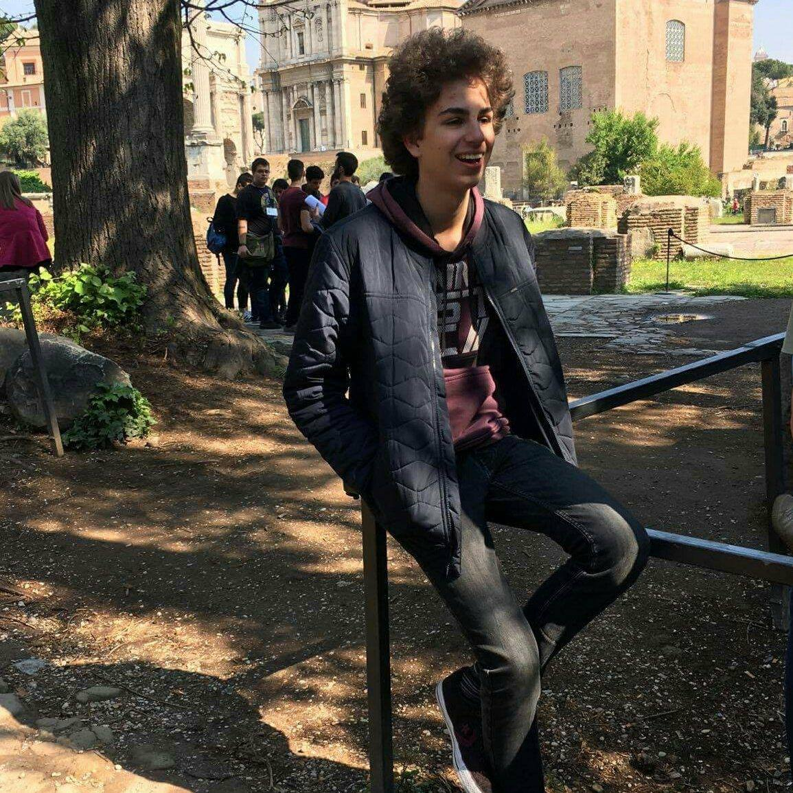

About Me
Welcome
My name is Noach Vandekerckhove. I am an aspiring Game Developer who is currently a 3rd year student at Howest
University, Belgium, graduating in Digital Arts and Entertainment with a major in Game Development.
Ever since I was young I've always been fascinated by video games and the older I grew the more I wanted to learn the process behind them.
I hope I can continue to learn more about the Game Development industry all the while also meeting new people in the hopes of creating something truly special.
Click here to view my Resume